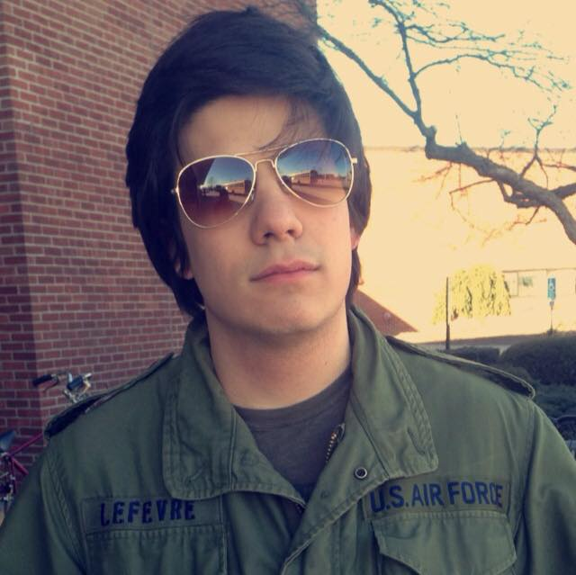

Helms/Helms Cahan Research Laboratory
Sara Helms Cahan, PI
Ken Helms, PI

Beck Powers, Research Assistant
I am a research assistant broadly interested in plasticity, the ability of organisms to produce altered phenotypes in response to environmental stimuli. More specifically, I am investigating the underlying epigenetic and transcriptomic basis of thermal acclimation in Drosophila by comparing gene expression differences in flies reared at high and low temperatures and later subjected to extreme heat or cold stress.
Katie Bora, Laboratory Technician

Jessica Cole, Ph.D Candidate
Amanda Northrop, Ph.D Candidate
 I study aquatic microbial communities - how they change as a result of organic matter enrichment and how such changes can be applied to management of eutrophication in aquatic ecosystems. I use the Sarracenia purpurea microecosyem and a combination of meta -omics techniques and greenhouse experiments to explore the changes in structure and function of microbial communities in response to organic enrichment and the influence of these processes on ecosystem dynamics.
I study aquatic microbial communities - how they change as a result of organic matter enrichment and how such changes can be applied to management of eutrophication in aquatic ecosystems. I use the Sarracenia purpurea microecosyem and a combination of meta -omics techniques and greenhouse experiments to explore the changes in structure and function of microbial communities in response to organic enrichment and the influence of these processes on ecosystem dynamics.
Benjamin Camber, Ph.D Candidate
 I am fascinated by the evolution of insects and the origins/mechanisms of their amazing life histories. I am currently studying the genetics of thermal limits in Drosophila, but my focus might shift towards social insect evolution in various ants. Eventually, I want to incorporate my interest in parasitoid wasp evolution and ecology into my research framework and figure out how they evolved to fill such complex and bizarre niches.
I am fascinated by the evolution of insects and the origins/mechanisms of their amazing life histories. I am currently studying the genetics of thermal limits in Drosophila, but my focus might shift towards social insect evolution in various ants. Eventually, I want to incorporate my interest in parasitoid wasp evolution and ecology into my research framework and figure out how they evolved to fill such complex and bizarre niches.
Jessica Wright, Undergraduate
Isabel Kaplan, Undergraduate
Marina Cannon, Undergraduate
Jhanavi Kapadia
I am currently a senior Honors College student in the Helms Cahan Lab preparing to write my undergraduate thesis. I will be studying the effects of Proline and Allantoin on the cold tolerance of Aphaenogaster picea, a temperate ant species, as well as Drosophila melanogaster a model organism by employing cold shock treatments. Hopefully, my research show me how these insects handle harsh conditions as the climate changes to understand some of the adaptive strategies they use survive.
Kit Lefevre

Juvenile Hormone is a pleiotropic hormone responsible for many different functions in insects, but in eusocial insects such as bees, wasps, and ants it serves the function of regulating age related tasks, also known as temporal polyethism. Increased levels of Juvenile Hormone that accumulate with age have shown to lead to older ants foraging outside of the colony as opposed to brood and nest care inside of the colony. By manipulating levels of Juvenile Hormone in worker ants the hypothesis is formed that higher levels of Juvenile Hormone added to the ants would result in the Experimental Ants having an earlier onset and intensity of foraging. However, collected data suggests that levels of added Juvenile Hormone tend to inhibit foraging behavior in Pogonomyrmex barbatus ants, resulting in the need for future research to determine the reasons behind the inhibition.